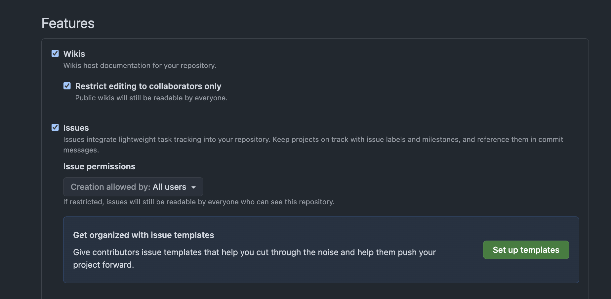
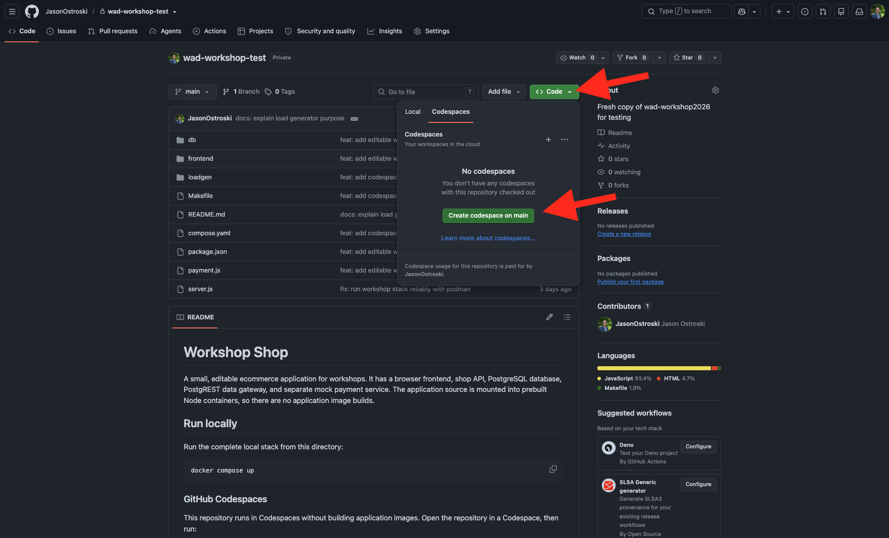
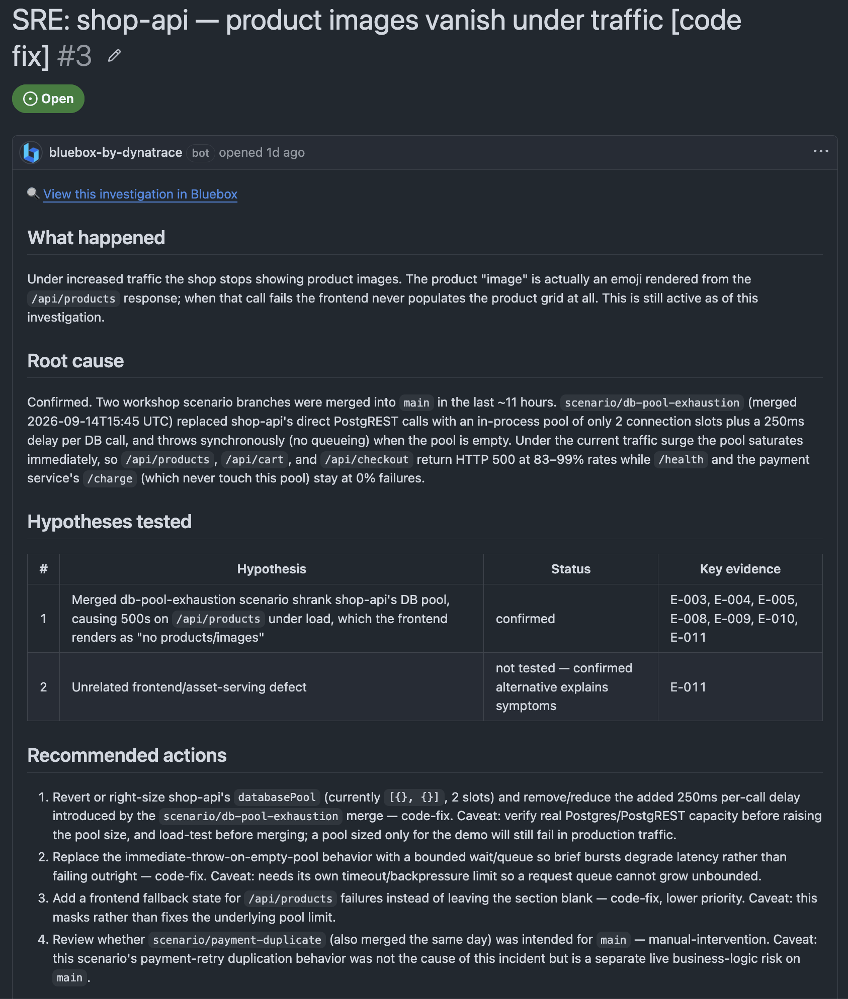

AI-Powered Dev & SRE Workflows
with Bluebox
In this workshop you'll use Bluebox — an AI SRE agent — alongside your coding agent to spin up a live ecommerce app, watch Bluebox investigate a real production problem in real time, and leverage those insights to code and deploy the fix. All driven by actual production telemetry rather than guesswork.
What's in this workshop
Lab 1 — Find & Fix
Generate load on a broken app, watch Bluebox investigate the root cause, create a GitHub issue from the findings, and have your coding agent write and deploy the fix — grounded in production evidence.
Lab 2 — Plan & Build
Before writing a single line, your coding agent checks production health with Bluebox, uses live telemetry to plan a new feature, then predicts what breaks at 100× traffic before the marketing campaign goes live.
Optional Lab 3 — Your App
Connect your own production app to Bluebox. Add OpenTelemetry, deploy, and start running the same workflows against your real services. Your Bluebox account is free to keep after the workshop.
What is Bluebox?
"Your coding agent plans, codes, reviews, and ships. But it can't see what happens after the merge.
Bluebox can."
Bluebox is a new offering built (with ❤️) by the AI and observability experts at Dynatrace. It's a standalone product — no Dynatrace knowledge or existing Dynatrace implementation required to get started. It continuously analyzes OpenTelemetry data from your running services, detects problems automatically, and investigates root causes so you don't have to dig through logs and dashboards yourself. When it finds something, it creates a GitHub issue with the full evidence trail attached — ready for you or your coding agent to act on. Bluebox also adds a code intelligence layer, giving your coding agent real production context so it can write new features and fixes with less prompting and fewer iterations.
Plan Before You Prompt
Briefs your coding agent with live production context before it writes a line — so it fits your system the first time, with no expensive re-prompts.
Find Issues Before They're Issues
Monitors production signals continuously. When something breaks, Bluebox investigates with full runtime context and pinpoints the root cause in your code.
Hand the Fix to Your Agent
Creates a GitHub issue with the full evidence trail attached. Your coding agent picks it up, builds the fix, and Bluebox confirms it held after deploy.
Bluebox is the missing production observability layer. It checks what your agent can't see, so you can merge with confidence.
The demo app: Workshop Shop
Workshop Shop is a small ecommerce app — products, a cart, checkout, and a payment service — backed by PostgreSQL. It has intentional production problems baked in, so you'll see exactly what Bluebox detects in real workloads.
Everything runs in a GitHub Codespace. You need a GitHub account and a browser — no installs required on your machine.
Before the labs, you'll connect three things: Bluebox, the demo app running in a Codespace, and your coding agent. Choose the path that matches your setup — you only need one.
🐙 GitHub Ecosystem
Use GitHub Copilot as your coding agent inside VS Code in Codespace. Everything — app, agent, and code — stays in the browser.
🤖 Kiro (or any agent)
Use Kiro IDE or Kiro Web as your coding agent. The demo app still runs in Codespace; Kiro connects to Bluebox from your machine. Any other agent works too.
If you want to try Kiro, our friends at AWS have provided some trial licenses. Ask your instructor for a code. Kiro IDE works on macOS, Windows, and Linux; Kiro Web runs in any browser. While these codes will work after the workshop, they must be claimed before Oct 1 and will expire on Nov 1.
Go to bluebox.ai. Select Sign in with GitHub and sign in with your GitHub account.
Bluebox automatically creates a default workspace when you sign up. You're good to go — continue to the next step.
Each workspace connects to one repository. If your existing workspace already has a repo connected, create a fresh one for today's workshop so you start clean. To do this: open the workspace menu in the top-left of Bluebox → Settings → Add workspace, give it a name, and use it for the rest of the lab.
Today's lab uses Codespaces and the free tier of GitHub Copilot licenses. If you've already used up your allotted licensing before the workshop, you can spin up a new personal GitHub account to use today.
Go to github.com/JasonOstroski/wad-workshop2026 and fork it to your personal GitHub account.
Once the fork is created, go to your fork's Settings → Features and confirm:
- Issues is toggled on
- Issue permissions → Creation allowed by is set to All users
This ensures Bluebox can create GitHub issues in your fork when it completes an investigation.

You need your own fork so Bluebox can create issues and your coding agent can push branches and open pull requests.
In Bluebox, go to Setup from the left sidebar.
Under GitHub Repositories connected, select your personal GitHub account and grant access to your wad-workshop2026 fork.
You may be prompted to install and configure access for the Bluebox GitHub App. Follow the prompts to authorize it for your personal account and grant access to your wad-workshop2026 fork.
GitHub Codespaces is a cloud-hosted development environment that runs directly in your browser. It gives you a full VS Code editor, a terminal, and a running Linux environment — no local setup needed. For this workshop, it's where the demo app will run (and if you chose, where you'll run your IDE and coding agent).
On your fork's GitHub page, click Code → Codespaces → Create codespace on main.

When using your own app, Bluebox's instrumentation skill can automatically add OpenTelemetry to your project to get runtime metrics, logs, and traces.
In this demo app, OTel is already wired up — you just need to add your connection details so it points to your Bluebox instance.
More on Bluebox's skills in the next step.
Get your OTel credentials from Bluebox. In the Bluebox sidebar, go to Setup and copy:
- The OTLP Endpoint — or run
bluebox otlp-endpointin the Codespace terminal if you installed the CLI - The OTLP Ingest Token / Header value from the Setup page
Set it as an environment variable only. Do not paste it into any file in your repository — your coding agent or Bluebox CLI will never ask you to.
In the Codespace terminal, set both variables and start the app:
# Paste your values — the endpoint can also be fetched by the CLI export OTEL_EXPORTER_OTLP_ENDPOINT="https://<your-endpoint-from-bluebox-setup>" # Paste the full header value from Bluebox Setup (do not include angle brackets) export OTEL_EXPORTER_OTLP_HEADERS="<header value from Bluebox Setup>" # Start the app (clean database, pulls images, waits for readiness) make clean
When startup succeeds you'll see: Shop is ready at http://localhost:8088
Codespaces will forward this port for us so we can access it via a unique URL. Open the Ports panel in your Codespace and click the forwarded address for port 8088 to open the shop in your browser. You should see products listed on the homepage.
GitHub Copilot runs directly inside the VS Code Codespace — no separate install needed. It also brings the repo into VS Code for us, so there's no need to clone it.
- In the Codespace VS Code, open the Copilot Chat panel (sidebar icon or
Ctrl+Shift+I). - Bluebox connects to Copilot through your forked repository. The
.github/prompts/folder in the repo contains Bluebox context files — Copilot reads them automatically.We've pre-loaded these skill files into the demo repo to streamline today's setup. Normally you'd install them in a couple of commands using the Bluebox CLI — see the Bluebox docs for details.
- Verify GitHub Copilot is able to leverage Bluebox by asking in Copilot Chat:
What Bluebox skills are available?
When you're asked to query production in the labs, use the prompt: "Using Bluebox, [your question here]" — Copilot will use the Bluebox MCP or prompt files to query live data.
Kiro IDE is an agentic IDE that connects to Bluebox directly. Install it on your local machine, then open your forked repo.
- Download and install Kiro from kiro.dev. Use the trial license code from your instructor.
- Open Kiro and clone your fork:
bash
git clone https://github.com/<your-username>/wad-workshop2026
- In the Kiro terminal, install the Bluebox CLI:
curl -fsSL https://app.bluebox.ai/install.sh | bash
- The installer runs
bluebox setupautomatically — it opens your browser for GitHub authentication, selects the workshop workspace, and installs skills into Kiro. - Verify in Kiro's Agent panel by asking:
Using Bluebox, is the shop app connected and sending telemetry?
Kiro Web runs in your browser — no local install. It needs a BLUEBOX_TOKEN secret and two steering files to connect to production data.
- Open kiro.dev and sign in with your GitHub account (use the trial license code from your instructor).
- In Kiro Web Settings → Steering, add two custom steerings:
Steering 1 — "Download Bluebox CLI"
When the user asks a production question or asks you to fix a bug, first install the Bluebox CLI by downloading the correct binary for the detected OS/architecture from app.bluebox.ai/download/bluebox and authenticate it. Then use `bluebox ask` to query production data before touching code.
Steering 2 — "Production Query with Bluebox CLI"
Always use `bluebox ask` to get production context before writing or reviewing code. Run: `bluebox ask "What are the current errors and performance issues?"` and write the output to a steering file in .kiro/steering/ before proceeding.
- In Bluebox Settings → CLI, click Create token, copy the token value.
- In Kiro Web Settings → Secrets, add a secret named
BLUEBOX_TOKENwith that value. - Verify by asking Kiro:
Using Bluebox, what services are connected to my workspace?
- Kiro may prompt you to install the Bluebox CLI after this first prompt. Follow the prompts to install it — this lets Kiro query live production data on your behalf.
Any coding agent that can run shell commands or call MCP tools can work with Bluebox. The key steps are:
- Install the Bluebox CLI in your agent's environment:
curl -fsSL https://app.bluebox.ai/install.sh | bash - Run
bluebox setupto authenticate and select the workshop workspace. - The CLI installs Bluebox skills into any supported agent it detects. For unsupported agents, ask your agent to run
bluebox ask "your question"to query production data directly.
Prefix any question with "Using Bluebox, …" and your agent will know to call bluebox ask for live production context before responding.
Browse the shop at the Codespace port 8088 address — add a product to the cart and navigate around to generate some traffic.
Then check two places:
- Bluebox Setup page — the checklist should show a green checkmark next to "Telemetry received".
- Bluebox Overview page — you should see
shopandpaymentservices listed.
Also ask your coding agent:
Using Bluebox, what services are connected and what does the request flow look like for the shop API?
✅ Connections Checkpoint
make cleanThe app has a production problem baked in. You'll generate load to trigger it, watch Bluebox detect it, investigate it, and use your coding agent to ship a fix — all grounded in live production evidence.
Part A — Break It
Open a second terminal in the Codespace and run the load generator:
make load
The load generator runs catalog, cart, and checkout traffic for 60 seconds. While it runs, open the shop in your browser and try to browse products. You should see the product list fail to load — the page goes blank or shows an error.
The app will recover once the load generator stops after its 60s run. This scenario is one that happens all the time — "It works on my laptop" — but the real problems only surface once production load hits the app.
If the shop recovers after the 60s run, run make load again. The problem is clearest under concurrent traffic.
In Bluebox, click + New chat in the sidebar (or go to Investigations → New investigation). Describe what you experienced:
Users are reporting that the product catalog and cart aren't loading — the page goes blank or shows an error when there's traffic on the app. What's causing this and what's the root cause?
Let it run and review the investigation as it progresses. It may take a few minutes to diagnose and find the root cause of the problem.
Part B — Investigate & Create the Issue
Read through Bluebox's investigation results. Look for:
- The root cause — what is the specific failure?
- The evidence — what telemetry data supports it?
- The impact — which endpoints and how many requests are affected?
- The recommended fix — what does Bluebox suggest?
In the investigation chat, ask things like: "Which endpoints are most affected?" or "Show me the error rate over time" — Bluebox can answer with production data.
Once Bluebox completes its investigation, it will automatically create a GitHub issue in your fork with the full root cause, evidence, and recommended fix attached.
Open the issue in GitHub and review the findings — this is what your coding agent will use as its starting point.

Part C — Fix It with Your Coding Agent
In your coding agent, paste the GitHub issue URL and ask it to fix the problem:
Fix the issue described in this GitHub issue from Bluebox: [paste your GitHub issue URL here] Ask Bluebox for any additional production data you need to understand the scope of the problem before writing any code.
Your agent will:
- Read the GitHub issue and Bluebox investigation
- Query Bluebox for any additional context it needs
- Find the relevant code in the repository
- Implement the fix
- Push the changes as a pull request
The root cause is an intentionally undersized database connection pool in server.js. Look for databasePool — the fix involves increasing pool capacity. Your agent should find this from the Bluebox evidence.
Review the pull request your agent created — check the code changes and confirm the fix addresses the root cause Bluebox identified.
Before running the commands below, merge the PR on GitHub. The git pull command will only pick up the fix once it's merged into your main branch.
Once merged, redeploy in the Codespace:
# Pull the merged fix and restart
git pull
make down && make up
Run the load generator again:
make load
While it runs, check the Bluebox Overview page — the error rate on shop should drop to near zero. Browse the app in your browser and confirm products load normally.
Ask Bluebox directly:
Using Bluebox, is the shop API healthy now? Compare the error rate and latency before and after the recent deployment.
✅ Lab 1 Checkpoint
Now that we've fixed that issue, let's use Bluebox to help our coding agent plan and build a new feature. Before building something new, your coding agent checks with Bluebox: is the app healthy? What's the current behavior in production? How will a new feature affect what's already running? Then you build — grounded in reality, not assumptions.
Part A — Health Check Before Building
Run the load generator again to build up fresh telemetry now that the fix is in place. In the Codespace terminal:
make load
This time the shop should stay up and serve traffic normally. Bluebox will pick up the healthy telemetry, giving your coding agent accurate production data to work from in the next steps.
Before adding any new feature, have your coding agent query Bluebox for the current state of the app:
Using Bluebox, assess whether the shop app is healthy and ready for a new feature deployment. Check: current error rates, p95 latency on key endpoints, any active findings or investigations. Tell me if there are any issues I should fix first.
Your agent will query Bluebox production telemetry and summarize the app's current health. If the Lab 1 fix worked, this should come back clean.
Part B — Plan and Build a New Feature
Ask your coding agent to understand production behavior before designing anything:
Using Bluebox, answer these questions before we start building: - What are the most viewed products in the shop right now? - What does a typical checkout flow look like end-to-end? - Are there any slow endpoints or database calls I should be aware of? Then, based on what you find, help me plan a "Flash Sale" feature — a sale badge on featured products with a discounted price shown in the catalog and cart.
Your agent will query live production data and use that context to inform the design — rather than guessing at product popularity or making assumptions about the code structure.
Ask your agent to implement the feature:
Implement the Flash Sale feature. Mark one or two products as "on sale" with a 20% discount. Show a sale badge in the product catalog (frontend/index.html or frontend/app.js). Make sure the discounted price shows in both the catalog view and the cart. Create a PR with the changes.
Review the PR, merge it, then redeploy:
git pull make down && make up
Open the shop in your browser and confirm the sale badge appears on the featured products.
Part C — What Breaks at 100× Traffic?
The Flash Sale is going live on social media. Marketing expects traffic to spike to 100× current levels when the campaign drops. Before allocating infrastructure resources, you want to know: what actually breaks first?
Ask your coding agent to use Bluebox to model the risk:
Using Bluebox, analyze the current production behavior of the shop app. If traffic increased 100 times, what are the most likely failure points? Look at: - Database connection patterns and pool behavior - Payment service latency and timeout behavior - Any endpoints that are already slow or resource-intensive For each bottleneck you find, suggest what would need to change to handle 100× traffic. We are NOT deploying these changes yet — this is planning only.
Your agent will return an analysis grounded in actual production telemetry — not generic architecture advice. Look for:
- Specific endpoints with high DB utilization
- Payment service timeout behavior under concurrent load
- Pool or queue limits that would saturate first
- Recommended infrastructure or code changes per bottleneck
This is the difference between Bluebox-grounded planning and traditional capacity planning: instead of estimating from load test models or guessing, you're making decisions from actual production behavior traces. The bottlenecks Bluebox surfaces are the ones that will actually fail — not theoretical ones.
You don't need to implement these changes in the workshop. The goal is to see how production data changes the conversation before you commit infrastructure spend.
✅ Lab 2 Checkpoint
If you have a real app — at work or a side project — try connecting it to Bluebox. Everything you set up here is yours to keep: the Bluebox account is free to use after the workshop with no expiry date.
The Bluebox account you created today is free to keep — no time limit, no credit card required. Everything you set up in this lab will continue working after you leave today.
A workspace is your environment in Bluebox — it holds your GitHub repository connection, OTel telemetry, findings, and investigations. Each workspace connects to one repository, so if you have multiple apps to monitor, you'll create a separate workspace for each.
You already have a default workspace from when you signed up (it's named after your GitHub username). You can use that one for your app, or create a fresh one:
- Open the workspace menu in the top-left of Bluebox
- Select your existing personal workspace, or go to Settings → Add workspace to create a new one
In your personal workspace, go to Settings → Setup:
- Under GitHub, authorize Bluebox for the organization or account that owns your app's repo
- Find and select your application's repository
- Click Confirm 1 repo
Bluebox monitors one repository per workspace. If you have multiple apps to monitor, create a separate workspace for each.
Open your repository in your coding agent of choice. You can install the Bluebox CLI by asking your agent directly:
Install Bluebox CLI from https://app.bluebox.ai without piping a remote script into a shell. Download the installer for your platform — https://app.bluebox.ai/install.sh for macOS/Linux, https://app.bluebox.ai/install.ps1 for Windows PowerShell, or https://app.bluebox.ai/install.cmd for Windows Command Prompt — to a local file, show me what it will do, then run it to start Bluebox setup.
Or install it yourself directly in your terminal:
curl -fsSL https://app.bluebox.ai/install.sh | bash
irm https://app.bluebox.ai/install.ps1 | iex
curl -fsSL https://app.bluebox.ai/install.cmd -o install.cmd && install.cmd && del install.cmd
When prompted during setup, select your personal workspace. Bluebox will confirm the connection and install its skills into your coding agent.
To update the CLI later, run bluebox update or re-run the installer command above — both update to the latest version.
Paste this prompt into your coding agent to add OpenTelemetry instrumentation:
Add OpenTelemetry to this project — use the Bluebox instrumentation skill
Your agent will use the installed Bluebox instrumentation skill to wire up the OTel SDK for your language and framework. It will:
- Add the required OTel dependencies
- Configure your service to export traces to Bluebox's OTLP endpoint
- Fetch the endpoint automatically using
bluebox otlp-endpoint
Your ingest token is intentionally kept out of files and CLI output. Copy it from the Bluebox Setup page and provide it as an environment variable or secret — never commit it to your repository.
Review the instrumentation changes your agent made, merge the PR, and redeploy your application to your hosting environment.
Once it's running, return to the Bluebox Setup page — it will confirm when telemetry data arrives. The Overview page will then show your services, and any active problems will appear as Findings automatically.
If the Setup page shows the connection as pending, leave it open — telemetry confirmation updates automatically once your service sends its first traces.
You're now connected. The same workflows from Labs 1 and 2 apply to your real production system. Try any of these:
- Investigate a real problem: Click Investigate on any Finding on the Overview page, or start a new investigation from the sidebar and describe an issue you've been meaning to look into.
- Ask your coding agent about production: "Using Bluebox, what are the most common errors in our app over the last 7 days?" — your agent queries live telemetry and gives you answers grounded in what's actually happening.
- Plan a new feature: Describe something you've been wanting to build, ask your agent to query production first, and let it draft an architecture plan grounded in your real service behavior.
Your Bluebox account includes ongoing access to findings, investigations, and production queries. You can continue using it for your own projects after the workshop with no expiry date and no credit card required.
Common issues and quick fixes. If you're stuck during the workshop, check here first before asking for help.
Workspace & CLI
If you have multiple workspaces in your Bluebox account (for example, a personal workspace and a workshop workspace), the CLI and your coding agent may be pointed at the wrong one. You can check which workspace is active and switch it:
# See all workspaces and which one is currently active bluebox workspace list # Switch to a different workspace by name bluebox workspace switch
You can also pass a workspace flag directly on a single query without switching permanently:
bluebox ask --workspace <workspace-name> "What services are connected?"
bluebox command is not found after installOpen a new terminal window, or add the install directory to your PATH for the current session:
export PATH="$HOME/.bluebox/bin:$PATH"
CLI sign-in tokens expire after 14 days of inactivity. Re-authenticate with:
bluebox auth login
GitHub & Telemetry
Confirm the Bluebox GitHub App is installed on the correct account. The Setup page will show an install prompt if the app is missing. Make sure you granted access to your forked repository specifically — granting access to "all repositories" also works.
Leave the Setup page open — it updates automatically when your service sends its first traces. Make sure the app is running (make clean completed without errors) and that you set both OTEL_EXPORTER_OTLP_ENDPOINT and OTEL_EXPORTER_OTLP_HEADERS in the same terminal session before starting. Browse the shop app to generate some traffic — telemetry only flows when the app receives requests.
Check the full Bluebox FAQ or ask your workshop instructor for help.